В задаче № 20—
№20
Э. дель Рио 1750 г
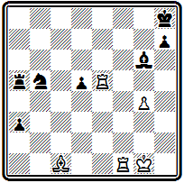
Мат в 5 ходов
после двух вступительных ходов с жертвой слона для завлечения короля в матовую сеть -
1. Лf8+ Kpg7 2. Ch6+ Кр:h6 — тихий ход 3. Лg8 создает неотразимую угрозу пожертвования ладьи для блокирования поля: 4. Лh5+ С:h5 5. g6#. Здесь интересен не только сам по себе тихий ход, но и заключающееся в нем тактическое содержание.
В примере № 21 представлена комбинация, вошедшая в литературу под названием «мат дель Рио»:
№21
Э. дель Рио 1750 г
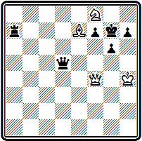
Мат в 3 хода
1. Ке6+ (конь освобождает поле слону) 1... Ф:е6 2. Фh6+. Подобная жертва завлечения и характеризует комбинацию: 2... Кр:h6 3. Cf8#.
Игра в задаче № 22 начинается тихой жертвой ферзя, привлекающей черные ладьи к своему королю:
№22
Э. дель Рио 1750 г
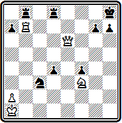
Мат в 5 ходов
1. Фd7 Лg8 2. Kg5 Лbf8 (2... h5 3. Фf5 g6 4. Фf6+) 3. Фh3! h6 4. Ф:h6+ gh 5. Лh7#.
Красивые маневры белых фигур завершаются интересной матовой комбинацией, использующей блокирование поля у черного короля.
Укорочение решения, использование тихих ходов, изящные матовые комбинации, характерные для задач дель Рио, явились значительным шагом по пути к современным принципам задачной композиции. И. Котц указывает, что в этом смысле дель Рио явился предшественником Андерсена, который учился на его задачах. Без работ дель Рио невозможно было бы появление «индийской задачи».
Творчество друзей дель Рио менее самостоятельно и бледнее. В задаче №23 -
№23
Д. Лолли 1763 г
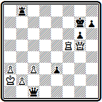
Мат в 7 ходов
белый ферзь совершает сложный обход белой ладьи, чтобы подготовить красивый эполетный мат:
1. Фf6+(Фe7+) Крh6 2. Фh4+ Kpg7 3. Фd4+ Крh6 4. Фf4+ Kpg7 5. Фе5+ Kph6 6. Лh5+ gh 7. Фf6#.
В композиции № 24
№24
Д. Понциани 1769 г
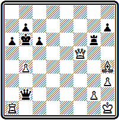
Мат в 7 ходов
финальное матовое положение интересно, но достигается оно, как и в предыдущем примере, форсированным путем:
1. Cd8+ Кра7 2. Л:а6+ bа 3. Фd7+ Крb8 4. Фс7+ Кра8 5. Фс8+ Кра7 6. Сb6+ Кр:b6 7. Фb8#.
Развитие задачной композиции ускоряется с началом XIX века. Выходят сборники задач. Во Франции в самом начале века издается собрание «стратагем», как иногда называли в то время композиции на шахматной доске. На титульном листе автор не обозначен, но впоследствии стало известно, что им является Монтиньи (7). В 1806 г. в Вене выходит сборник Доллингера (8). А в 1814 и новым изданием в 1832 г. выпускает «Задачи для любителей шахмат» Мендгейм (9).
Большинство композиторов начала XIX века следует принципам Стаммы. Опыты дель Рио остаются пока без развития. Последователи Стаммы создают большое количество многоходовых задач с громоздким построением и форсированным решением —задач-монстров, как характеризует их Уайт. Особенно отличаются в этом отношении Зильбершмидт и Доллингер.
Приведем два сравнительно лучших примера из их творчества.
№25
Г. Зильбершмидт
начало ХIХ века
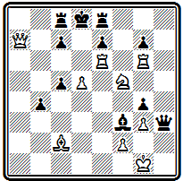
Мат в 6 ходов
В задаче №25 любопытен эполетный мат после 1. Лd6+ ed 2. Л:d6+ cd 3. Фb6+ Лс7 4. Фb8+ Лс8 5. Ф:d6#; несколько длиннее вариант - 4... Kpd7 5. Ca4+ Лс6 6. С:с6#.
В примере № 26 белые жертвуют все тяжелые фигуры и привлекают неприятельского короля на поле f8, где он получает мат от пешки:
№26
И. Доллингер 1806 г.
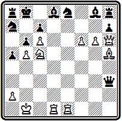
Мат в 5 ходов
1. Ка6+ Крс8 2. Л:d8+ Кр:d8 3. Л:е8+ Кр:е8 4. Фf8+ Кр:f8 5. g7#.
Некоторой самостоятельностью и оригинальностью отличается творчество немецкого композитора Юлиуса Мендгейма. Из его сборника мы воспроизводим четыре примера.
В проблеме № 27 очень интересен маневр белого ферзя с возвратом по тем же полям, в результате чего уничтожаются черные пешка а2 и ладья а8 и открывается линия для ладьи a1:
№27
Ю. Мендгейм 1832 г.
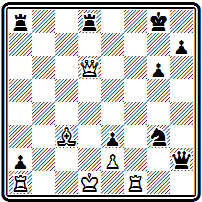
Мат в 7 ходов
1. Лf8+ Л:f8 2. Фd5+ Лf7 3. Ф:a8+ Лf8 4. Ф:a2+ Лf7 5. Фа8+ Лf8 6. Фd5+ Лf7 7. Ла8#.
Задача № 28 содержит тонкий ход белой ладьей, развязывающий коня:
№28
Ю. Мендгейм 1832 г.
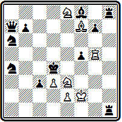
Мат в 6 ходов
1. К:f5+ Крс5 (1... Кре5+ 2. Ке3+) 2. Kd4+ Kpb4(2... Крb6 3. Лb5#) 3. Лb5+ Кра3 4. Лb3+ Кра2 5. Лb6+! — в этом ходе тонкость задачи, надо развязать белого коня — 5... Кра1 6. Кс2#.
Мендгейм был первым, кто обратил внимание на важность экономичных и чистых матов. Правильные маты, конечно, встречались и раньше. Их можно найти и у авторов восточных мансуб, и у других ранних композиторов. Однако в ту пору они были в значительной мере случайными. Мендгейм же стал их культивировать сознательно. Об этом свидетельствует тот факт, что в его сборнике много задач заканчивается правильными матами.
Примером довольно красивого правильного мата может служить задача № 29:
№29
Ю. Мендгейм 1832 г.
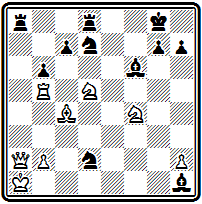
Мат в 5 ходов
1. Ке7+ Крh8 (1... Kpf8 2. Keg6+ hg 3. К:g6+ Kpe8 4. Cf7#) 2. Kg6+ hg 3. К:g6+ Kph7 4. Лh5+ Kp:g6 5. Cf7#.
Комбинация с двумя симметричными правильными матами представлена в примере №30:
№30
Ю. Мендгейм 1832 г.
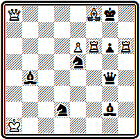
Мат в 4 хода
1. Се7+ С:а8 2. Лf8+ Kpg7 3. Cf6+! Кр:f8 4. Лh8# и 3... Кр:h6 4. Лh8#.
Из других проблемистов первой трети XIX века следует отметить англичан Льюиса и Уокера, французов Мовийона и Лабурдоне. Последнему, одному из сильнейших шахматистов своего времени, принадлежит, в частности, первое представление темы «эксцельсиор»—марша белой пешки от начальной позиции до поля превращения (см. № 000).
Глава 3
ФОРМИРОВАНИЕ СОВРЕМЕННЫХ ПРИНЦИПОВ
Возникновение периодической шахматной печати.
Основоположники современной задачи — композиторы 40-х годов. Д'Орвилль. Болтон. Бреде. Андерсен.
«Индийская задача». Сборник Александра
В 30-40-х годах прошлого столетия зародилась периодическая шахматная печать. Первой ласточкой явилось создание в 1836 г. французского журнала «Паламед», за которым последовали английский «Чесс плейерс кроникл» (1841) и немецкий «Дейче шахцейтунг» (1846). Среди отделов выделялась шахматная рубрика еженедельника «Иллюстрейтид лондон ньюс», выходившая с 1842 г.
Появление периодической печати сыграло большую роль в общем подъеме шахматной культуры. Но особенно важное значение оно имело для композиции. Ведь если у шахматистов-практиков средством совершенствования и обмена опытом могли служить соревнования, то проблемисты располагали для этого только печатью.
Огромное значение для подъема композиции в середине века имел рост связей как внутри отдельных стран, так и между ними. Уайт, например, прямо пишет: «Величайшим фактором в развитии шахматных задач явилось строительство железных дорог. Это был даже более важный фактор, чем возникновение шахматных отделов и журналов, ибо только он создал возможность распространения этих отделов и журналов, позволил установить связи между композиторами, решателями, критиками при помощи копеечной почты».
На этой почве в 40-е годы совершается переворот в основах задачной композиции, преобразующий само лицо шахматной задачи, ее существо. Определяются и устанавливаются новые принципы композиции, коренным образом отличающиеся от господствовавших до того и уходивших своими корнями в далекое средневековье. Именно в это время закладываются краеугольные камни в фундамент здания современной задачной композиции.
Невозможно указать точную грань, когда закончилась старая композиция и началась современная. Это был сложный и длительный процесс борьбы и сосуществования уходящего и нового. Но можно совершенно определенно назвать тех композиторов, творчество которых сыграло в этом процессе решающую роль. В их наследии можно найти еще элементы отживающего, но у них уже со всей силой, ярко и рельефно проступают новые и прогрессивные черты, знаменующие начало современной эры.
Эту группу композиторов принято объединять понятием «старая школа», понимая под этим начальный этап развития современной задачной композиции. Термин этот принадлежит голландскому проблемисту Венинку, автору наиболее систематического и полного исторического исследования на тему «Шахматная задача» (10), которое вышло в 1921 г., а через пять лет в переработанном и дополненном виде было издано Уайтом в его «рождественской серии»*.
* Американский композитор Уайт (1880—1951 гг.) собрал крупнейшую в мире коллекцию задач и регулярно на протяжении трех десятилетий, с 1905 по 1936 г.. выпускал книги но композиции, приурочивая их выход к рождественским праздникам. Всего в этой серии им было издано 44 книги, в основном сборники задач выдающихся композиторов.
Венинк пишет, что под «старой школой» он понимает группу композиторов, «расцвет творчества которых относится примерно к 1840 году и которые положили начало современной задаче, какой мы ее знаем сейчас».
Наиболее выдающимися представителями «старой школы» были француз Огюст д'Орвилль, англичанин Горацио Болтон и немцы Юлиус Бреде и Адольф Андерсен.
Д'Орвилль был весьма продуктивным композитором. Основную массу произведений он печатал в журнале «Паламед». Сборник д'Орвилля вышел в 1842 г. в Нюрнберге (11) и содержал 250 композиций, в тем числе 189 ортодоксальных задач на прямые маты от 2 до 9 ходов. Почти половину этих задач составляют произведения на мат в 3 и 4 хода, 20 - двухходовок и лишь 18 - на мат в 7-9 ходов.
Творчество д'Орвилля весьма своеобразно и самобытно. Основное внимание он обращает на красоту матовых позиций. Своими изящными произведениями он сумел привлечь к ним внимание других проблемистов. Большинство задач д'Орвилля имеет форсированное решение с многочисленными жертвами (как правило, тяжелых фигур), завершающееся правильным матом. Примерами могут служить следующие произведения.
В задаче № 31 жертвами слона и ферзя белые завлекают черного короля в матовую сеть:
№31
О. d`Орвилль «Паламед» 1838 г.
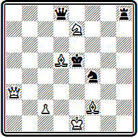
Мат в 3 хода
1. Cd4+ Kp:d4 2. Фе3+ Кр:е3 3. Kf5#.
В примере №32 правильный мат осложняется — он дается при связанном черном ферзе, для чего приносится в жертву белый ферзь:
№32
О. d`Орвилль «Паламед» 1842 г.
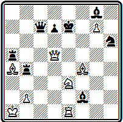
Мат в 4 хода
1. Cg5+ Kpe8 2. Кс4+( Кf5+) С:e1 3. Ф:d7+ Ф:d7 4. Kd6#.
Интересна композиция №33, в которой в процессе решения жертвуются все белые фигуры, кроме ферзя, и им-то дается правильный мат:
№33
О. d`Орвилль «Паламед» 1837 г.
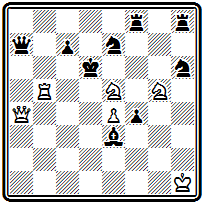
Мат в 5 ходов
1. Лd5+ К:d5 2. Фс6+ Кр:е5 3. Кf3+ Кр:е4 4. Фс2+ Кр:f3 5. Фg2#.
У д'Орвилля есть задачи, построенные и в несколько ином стиле. В них правильный мат достигается в результате тихой маневренной игры, в которой у белых участвуют лишь легкие фигуры и пешки.
Композиция № 34 является подлинно классическим произведением, не утратившим своей прелести до сих пор. Достойно удивления, как белые без единого шаха, жертвуя обоих коней, вынуждают черного короля буквально «вползти» в мат:
№34
О. d`Орвилль «Паламед» 1837 г.
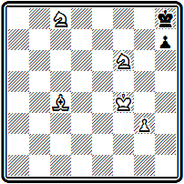
Мат в 5 ходов
1. Кh5 h6 2. Ке7 Крh7 3. Kg6! Кр:g6 4. Cg8 Кр:h5 5. Cf7#.
Подобное же завлечение короля в матовую сеть в результате цугцванга при пожертвовании обоих коней имеется и в задаче № 35, где действие разыгрывается в центре доски:
№35
О. d`Орвилль «Паламед» 1837 г.
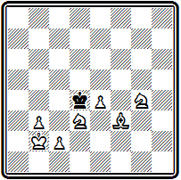
Мат в 5 ходов
1. Kge5 Кре3 2. с3 Kpd2 3. Кс4+ Кр:d3 4. b4 Кр:с4 5. Се2# .
На диаграмме №36 приведен пример двухходовки д'Орвилля.
№36
О. d`Орвилль 1842 г.
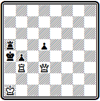
Мат в 2 хода
Ход 1. Лb2 создает угрозу 2. Ла2#; на 1... bЗ следует правильный мат 2. Ф:b3#.
В том же сборнике д'Орвилль дает другую позицию, являющуюся близнецом первой. Замена пешки d5 черным же конем с5 приводит к решению с новым правильным матом:
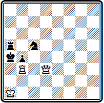
Мат в 2 хода
1. Ла3+ bа 2. Фс4#.
Если д'Орвилль открыл для современной композиции красоту правильных матовых позиций, то Болтон выступил пионером в понимании красоты и ценности тихого хода.
Болтон много печатался в «Чесс плейерс кроникл» и отделе «Иллюстрейтед лондон ньюс», редактировавшихся знаменитым Стаунтоном, и завоевал всеобщее признание. Для своих замыслов Болтон предпочитал более солидные, монументальные формы, чем д'Орвилль. Большинство задач Болтона — многоходовки. Среди 70 его задач, приведенных в сборнике Александра, всего 2 трехходовки и 4 четырехходовки; среднее число ходов решения достигает восьми.
Большой популярностью пользовалась трехходовка № 37. Первые три года она помещалась Стаунтоном на обложке его журнала, пока ее не сменила «индийская задача».
№37
Г. Болтон «Чесс плейерс кроникл» 1842 г.
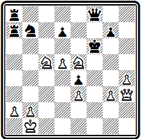
Мат в 3 хода
Решается она так: 1. Фf5+ Кр:f5 2. Ке:d7 с неизбежным матом 3. g4#.
Подобная жертва ферзя, после которой белые остаются с двумя копями, уже встречалась у Стаммы и его последователей. Однако у них за жертвой следовали непрерывные шахи, здесь же - тихий ход. По современным понятиям это весьма примитивный замысел, но для своего времени находка Болтона явилась выдающимся предвидением.
Очень интересны тихие ходы задачи №38-
№38
Г. Болтон «Иллюстрейтид лондон ньюс» 1849 г.
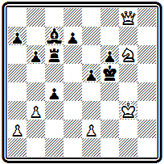
Мат в 5 ходов
После 1. Ke7+ Кре4 белые предлагают жертву коня 2. Kf5!, принятие которой завлекает короля в матовую сеть (2... Кр:f5 3. Фg4#). Черные отказываются от жертвы и сами создают встречную угрозу шаха ладьей 2… cb. Однако новым тихим ходом белые добиваются цели:
3. Крh4, угрожая 4. Фg2+ Кр:f5 5. Фg4#, а на 3... Лс4 отвечая 4. Ф:с4+ Кр:f5 5. Фg4#.
К сожалению, возможно и 1. Kh4+. Попытка исправить дефект привела к такой позиции -
Г. Болтон «Иллюстрейтид лондон ньюс» 1849 г. (версия)
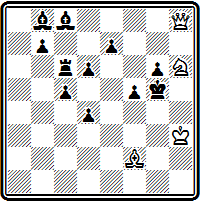
Мат в 5 ходов
1. Kf7+ Крf4 2. Kg5!(2... Кр:g5 3. Фh4#).2… Лb6, Лa6 3. Крg2, угрожая 4. Фh2+ Кр:g5 5. Фh4#,
2... Сe6 3. С:d4(4. Фh4#) cd 4. Ф:d4+ Кр:g5 5. Фh4#,
Присылайте на сайт и свои варианты исправления этой и других задач старых мастеров.
В композиции № 39
№39
Г. Болтон из рукописи «Чесс гейм»
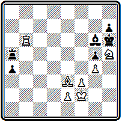
Мат в 6 ходов
после вступления 1. Cd4 Ла7 белые могли бы продолжать 2. Kg3 и 3. Kf5#, не имей черные защиту 2... Лf7. Выходит, надо закрыть линию «f» для ладьи, но сразу 2. Cf6 не годится из-за развязывания черного слона, могущего взять коня h5, a 2. Лf6 не проходит ввиду перекрытия белого слона от поля g7. Решает тонкий маневр с предварительным переводом слона через поле f6, чтобы его не перекрыла белая ладья:
2. Ch8! Лf7 3. Лf6 а3 4. Cg7+ Л:g7 и только теперь 5. Kg3 Л~ 6. Kf5#.
Из многоходовок Болтона приведем два примера. В задаче №40 белые замысловатыми маневрами добиваются сначала размена ферзей, а затем конь матует короля, используя блокирование поля пешкой «h»:
№40
Г. Болтон 1844 г. (версия)
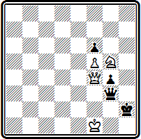
Мат в 11 ходов
1. Фd2+ Крh1 2. Фd5+ Крh2 3.Фа2+ Крh1 4. Фа8+ Kph2 5. Фh8+ Фh3+ 6. Ф:h3+ gh
7. Ке4 Крh1 8. Kpf2 Kph2 9. Kd2 Kph1 10. Kf1 h2 11. Kg3#.
(пешки f5 и f6 добавлены, чтобы исключить возможность заматовать черного короля в 11 ходов и после 6. K:h3)
В задаче № 41 зигзагообразное движение белого ферзя по диагонали с6-g2 вниз и обратно используется для уничтожения черной пешки g2, которая препятствует осуществлению тихого маневра белых.
№41
Г. Болтон «Чесс плейерс кроникл» 1850 г.
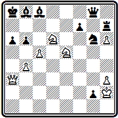
Мат в 24 хода
1. Фf3+ Кра7 2. Кс6+ Кра8 3. Kd8+ Kpa7 4. cb+ Кр:b6 5. Фс6+ Кра7. Здесь белые могли бы играть 6. Ф:с8 с матом в 4 хода, не мешай этому пешка g2. Значит, надо ее забрать: 6. Фс5+ Кра8 7. Фd5+ Кра7 8. Фd4+ Кра8 9. Фe4+ Кра7 10. Фe3+ Кра8 11. Фf3+ Кра7
12. Фf2+ Кра8 13. Ф:g2+ Кра7 14. Фf2+ Кра8 15. Фf3 Кра7 16. Фe3+ Кра8 17. Фe4+ Кра7 18. Фd4+ Кра8 19. Фd5+ Кра7
20. Фс5+ Кра8, а теперь уже возможно 21. Ф:с8 f6 22. Ф:а6+ Ла7 23. Фс6+ Лb7 24. Ф:b7# или 22... Са7 23. Фс6+ Крb8 24. Фс8#;
Задача была опубликована под названием «Винт» и посвящена Стаунтону.
Вклад третьего крупного представителя «старой школы» Бреде относится к области содержания шахматной задачи. Он открыл красоту стратегической игры, борьбы и взаимодействия фигур. Посмотрим задачу №42
№42
Ю. Бреде 1844 г.
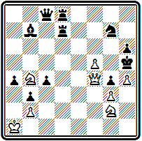
Мат в 4 хода
Внешне она напоминает позиции Стаммы. Белым грозит мат. Казалось бы, надо шаховать и шаховать. Но нет.
Тихий вступительный ход 1. Фd6! парирует угрозу мата. Закрывая линию действия ладьи, белые в свою очередь создают угрозу матов конем на f4 и ферзем на g6. Черные находят защиту 1... Ке6. Белые бессильны возобновить прежние угрозы взятием коня 2. Ф:е6?, но они могут предварительно сыграть 2. Kd5, угрожая матом на f4 и f6 и вынуждая черных перекрыть линию «d» слоном: 2... С:d5, после чего уже решает 3. Ф:е6 с неизбежным матом.
Еще сложнее замысел композиции № 43.
№43
Ю. Бреде 1844 г.
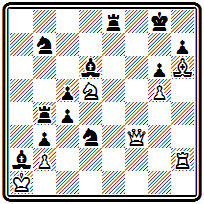
Мат в 5 хода
Белые снова под угрозой мата. Развертывается интересная игра. 1. Ке7+ — жертвуя коня, белые путают карты черных.
Действительно, на 1... Л:е7 сразу следует 2. Фf8#, используя перекрытие слона. Поэтому 1... С:е7, но теперь белые используют перекрытие ладьи:
2. Фd5+ Kph8 3. Фf7. Грозит мат на g7, а после 3... Лg8 решает жертва ферзя 4. Ф:h7+ Кр:h7 5. Cf8#, с использованием блокирования поля g8. Тема взаимного перекрытия черных фигур на одном поле с пожертвованием на точке пересечения линий их действия белой фигуры через несколько лет была вновь открыта А. Новотным и сохранилась в истории композиции под его именем.
В задаче № 44 представлена острая идея, вписавшая имя ее автора в летопись задачной тематики. Сущность темы перекрестных шахов Бреде состоит в том, что белая фигура, закрывшая короля после шаха, в дальнейшем развязывается и дает мат.
№44
Ю. Бреде 1844 г.
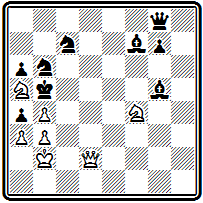
Мат в 4 хода
После 1. Ке2 черные, защищаясь от угроз 2. Кс3# и 2. Kd4#, объявляют шах 1... Cf6+. Белые жертвуют ферзя 2. Фd4!, возобновляя угрозу. Брать ферзя, очевидно, нельзя (2... С:d4+ 3. К:d4#), но на защиту 2... Kd5 следует 3. Кс3+ К:с3 и развязанный белый ферзь дает мат 4. Фс5#.
Если черные пытаются защищаться конем на первом ходу 1... Kbd5, то белые используют перекрытие слона 2. Фd3+ Крb6 З. Фd4+;
на 1... Kd7 решает 2. Кс3+ Крb6 3. Фd4+, на 1... Кс4+ 2. bс+ С:с4 3. Кс3+ или 2... Крb6 3. Фd4+. Помимо идейного содержания, воплощенного в главном варианте, задача интересна развернутой игрой, правда уже форсированной, проходящей в нескольких вариантах.
Примером трехходовых задач Бреде может служить позиция №45, в которой, подобно задаче Болтона, первым ходом жертвуется ферзь
№45
Ю. Бреде «Паламед» 1843 г.
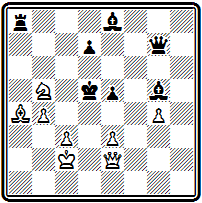
Мат в 3 хода
1. Фс4+ Кр:с4, а затем следует тихий ход 2. е4 с неизбежным матом конем на а3 или d6. После 2... Л:а4 мат 3. Kd6# — правильный.
Бреде в 1844 г. выпустил свою книгу (12), вторая часть которой состоит из его собственных задач. Им предпослано краткое введение, где поясняются основные положения задачной композиции и предлагаются основы классификации.
Имя Андерсена известно всем шахматистам. С его знаменитыми «бессмертной» и «вечнозеленой» партиями, выигранными в блестящем комбинационном стиле, любители знакомятся уже на первых шагах обучения. Значительно менее известно, что до того, как стать фактическим чемпионом мира, Андерсен уже был выдающимся композитором. В 1842 г. он выпустил небольшую коллекцию своих задач (13), через год переизданную в Лондоне. Среди помещенных в сборнике 60 композиций есть произведения, прелесть которых не увяла до настоящего времени.
Будучи многим обязанным своим предшественникам, у которых он перенимал все лучшее и прогрессивное, Андерсен вместе с тем критически преодолевал их наследие. Таково, например, его отношение к форме и стилю задач Стаммы. Заимствуя у него остроту начальной позиции, Андерсен доводил эту остроту до предела: белые борются с матовой угрозой не шахами, а тихими ходами.
Вот позиция № 46.
№46
А. Андерсен 1842 г.
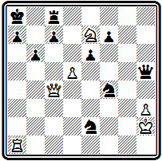
Мат в 5 ходов
Сколько мы видели у Стаммы таких примеров неотвратимой угрозы мата королю белых, но, в отличие от задач сирийца, белые делают неожиданный тихий ход с жертвой сильнейшей фигуры: 1. Фс6+ Крb8 2. Ф:е6! Взятием ферзя 2... fe черные могут восстановить угрозу мата, но объявить его они уже не успевают: 3. Кc6+ ~ 4. Л:а7#. Попытка разменять ферзей лишь на ход оттягивает развязку: 2... Ф:h3+ 3. Ф:h3 (снова ход без шаха) 3... К:h3 4. Кс6+ ~ 5. Л:а7#.
Работая в одно время и в одном направлении с другими выдающимися проблемистами «старой школы», Андерсен в своих лучших произведениях нередко превосходил их мастерством воплощения замыслов. Задача №47 также построена в стиле Стаммы.
№47
А. Андерсен 1842 г.
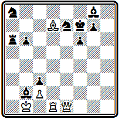
Мат в 5 ходов
После 1. Фе6+ Kpf8 (1... Kpg6 2. Лg1+ ~ 3. Фh3#) шахов больше нет. Но находится эффектный ход Бреде 2. Са4! Черным ничего не остается, как принять жертву ферзя 2... С:е6, а тогда проводится изящная матовая концовка в духе д'Орвилля 3. Лd8+ Kpf7 4. Се8+ Kpg8 5. Cg6#.
Начальная позиция задачи №48 — опять-таки подражание Стамме.
№48
А. Андерсен 1842 г.
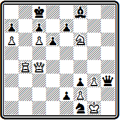
Мат в 5 ходов
И снова после отвлекающей жертвы ферзя 1. Фе6+ Ф:е6 следует тихий ход в стиле Болтона 2. Kd7! Но если у Болтона такой ход был завершением решения, то здесь впереди эффектный финал: 2... Ф:d7 3. Лb8+ Кр:b8 4. cd. Белые пожертвовали все фигуры, остались с одной пешкой, но мат неизбежен — 4... с5 5. d8Ф#.
Есть у Андерсена и задачи на правильные маты. В этой области он в лучших своих работах углубляет д'Орвилля.
Проблема № 49
№49
А. Андерсен 1842 г.
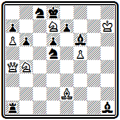
Мат в 5 ходов
открывается тихим ходом 1. Kf8 с угрозой 2. Фd7#. После взятия ферзя 1... Л:а4 следуют два промежуточных шаха
2. Ке6+ Кре8 3. Ch5+ Kpd7 и затем 4. Кc6 с двумя правильными матами 4... Кр:с6 5. Се8# или 4... ~ 5. Кb8#.
Здесь Андерсен предвосхищает стиль Байера, который через четверть века станет завоевывать многочисленные призы подобными композициями.
Но наиболее близок Андерсен к Бреде. Больше всего его влекут элементы тактической борьбы, содержание ходов, а не их форма. Как неожиданна жертва ферзя под удары превращающихся пешек в задаче №50
№50
А. Андерсен «Иллюстрейтид лондон ньюс» 1846
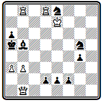
Мат в 5 ходов
Белые должны во что бы то ни стало воспрепятствовать превращению пешки «е». Они достигают этого тем, что заставляют черных блокировать ее новоиспеченным ферзем. 1. Фе1 deФ — теперь угроза шахов белому королю ликвидирована и возможен тихий ход —
2. Лd4 ~ 3. Ла4+ С:а4 4. b4+ Ф:b4+ 5. ab#. Следует отметить, что самого Андерсена не удовлетворила эта концовка с жертвой ладьи, известная еще в средневековых мансубах, и в новое издание своего собрания задач, выпушенное в 1852 г., он поместил переработанную позицию, в которой, отбросив финал, сократил число ходов до трех.
Сборник 1852 г. также содержал 60 задач, но только 29 в неизмененном виде перешли из ранней книги. 12 были переработаны, а остальные 19— новые композиции, составленные за прошедшее десятилетие. Общая тенденция шла в направлении углубления содержания и сокращения числа ходов. Лучшими задачами Андерсена, вошедшими в сокровищницу классических произведений, являются три следующие позиции, отличающиеся предельной экономичностью и глубоким замыслом.
В задаче №51 красивый мат ладьей при связанной пешке осуществляется после тонких маневров ладьи и слона:
№51
А. Андерсен «Дейче шахцейтунг» 1846
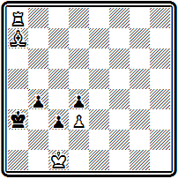
Мат в 4 хода
1. Сb6+ Крb3 2. Ла1 (ход через критическое поле, предупреждающий перекрытие ладьи слоном) 2... с2 3. Са5 Крс3 4. Ла3#.
Трехходовка №52 является яркой иллюстрацией идеи цугцванга.
№52
А. Андерсен «Лейпциг иллюстрирте цейтунг» 1848
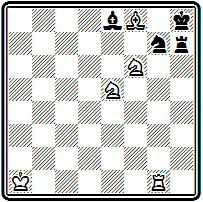
Мат в 3 хода
У черных достаточно сил, но они прикованы к защите важных полей. На 1... К~ готов мат 2. Лg8#, на ход ладьи — 2. С:g7#.
Нельзя уходить и слоном с диагонали е8-h5 из-за мата конем. Остается одна возможность — Ch5. Однако и белые ограничены в своих движениях. Уход ладьи с первой линии откроет шах королю, с вертикали «g» — освободит черную ладью. Единственный выжидательный ход— 1. Крb1, черные отвечают 1... Ch5, а теперь белые получают возможность выключить слона на поле g6— 2. Лg6. Слон перекрыл ладью, шаха на h1 нет, и конь матует на f7 или в случае взятия ладьи на g6.
Наконец, самая популярная задача — №53, комбинация которой вошла в историю под названием мата Андерсена.
№53
А. Андерсен 1842
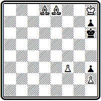
Мат в 4 хода
Черные в цугцванге, и серией тихих ходов белые завлекают черного короля в матовую сеть:
1. Ch5 Kp:h5 2. Kpg7 h6 3. Крf6 Kph4 4. Kpg6#.
Суть комбинации Андерсена состоит в том, что, распатовывая черного короля, белые выключают свою фигуру и после хода короля на освободившееся поле объявляют мат включением перекрытой перед тем фигуры. Эта композиция явилась непосредственным предшественником знаменитой «индийской задачи», в которой та же идея осложняется критическим ходом тематической белой фигуры.
В августе 1844 г. Стаунтону, редактору «Чесс плейерс кроникл», была прислана из Дели задача под псевдонимом «Шагирд». Тогда же в несколько измененной редакции композицию получил французский журнал «Паламед». Так они и появились одновременно в февральских номерах журналов за 1845 г. Задача произвела огромное впечатление своей необычайной трудностью.
На диаграмме №54 приведен французский вариант проблемы.
№54
Г. Ловдей «Паламед» 1845
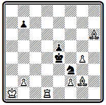
Мат в 4 хода
Черные грозят запатоваться после исчерпания ходов пешкой «b». Белые должны подготовить распатование черных и последующий мат. Но как это сделать? Принципиальная трудность, новизна решения задачи заключаются в том, что никакими пробами найти его нельзя. Роль слона как активной фигуры при любом его отступлении — на g5, е3 или c1 —одинакова. Чтобы выбрать действительно решающий ход, надо постигнуть идею, заключительную комбинацию. А состоит она в том, что белый слон должен перейти через критическое поле d2, на котором его сможет затем выключить ладья для распатования короля.